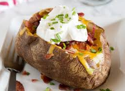

Baked Potato

Description
Baked potatos are simple to make, and taste delicious! They are also customizable with toppings, which can make for an even tastier treat.
Below, we'll list what ingredients you'll need, and the simple steps to make the perfect baked potato.
Ingredients
The only ingredient you really need is a potato, but we have included a list of our favorite toppings in this recipe.
- One russet potato
- Butter
- Sour cream
- Salt
- Pepper
- Green onion/chives
- Bacon bits
- Shredded cheddar cheese
Steps
- Preheat oven to 400 degrees.
- Rinse the potato, scrubbing away any dirt.
- Pat the potato dry with a towel.
- With a fork, poke holes on one side of the potato. This prevents your potato from bursting in the oven.
- Once the oven has finished preheating, place the potato directly on the oven rack.
- It should take roughly 50 minutes to an hour for the potato to bake.
- You can test if it is done by giving it a squeeze with a pair of tongs, or your hand in an oven mitt. There should be some "give", or softness, that lets you know the potato is adequately baked.
- Remove the potato from the oven and place on a plate. Turn off the oven.
- After the potato has cooled for a couple of minutes, make a slit along the top of the potato from end to end, lengthwise.
- Add butter, seasonings, and toppings.
- Enjoy!